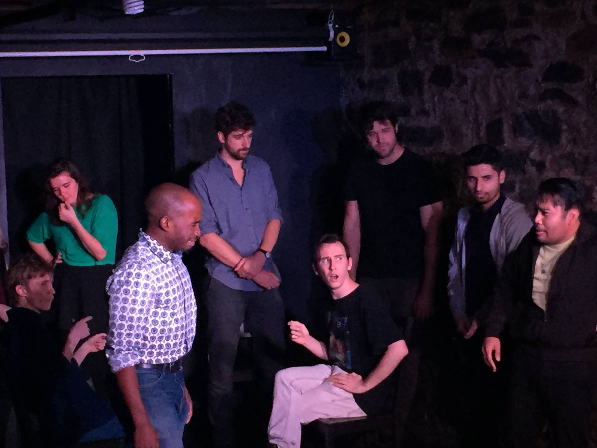

Hello, I'm Ian.
I'm a full stack developer currently seeking new opportunities. Take a look through my projects, get to know me, and check out my resume.
Feel free to contact me by phone, email, mail, or LinkedIn.
Thanks for stopping by!
I'm a full stack developer currently seeking new opportunities. Take a look through my projects, get to know me, and check out my resume.
Feel free to contact me by phone, email, mail, or LinkedIn.
Thanks for stopping by!
Presumably you've come to this page to learn a little more about me. Thank you! That's very kind.
I was born in the sunny town of Calabasas, California in the spring of 1993, a strangely excellent year in film. I had an eventful childhood that I will save for my memoirs - all I'll say now is that I was surrounded by a loving and supporting family and an inspiring group of friends, teachers, and mentors, for whom I am very grateful.
I made my way to New York in 2011 to attend New York University's Tisch School of the Arts for acting, where I graduated with honors. In my final semester there I took my first web design class and fell deeply in love with code and design. After graduating NYU, I attended Dev Bootcamp in New York City's Financial District, and I am now seeking employment as a junior developer.
For fun, I like to comb the city for cool music venues, themed bars, and cult film events. I also see a lot of comedy shows, and I still write and perform comedy as a hobby.
